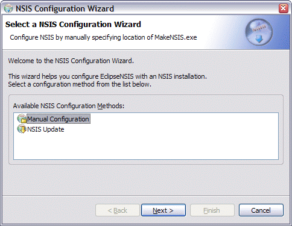
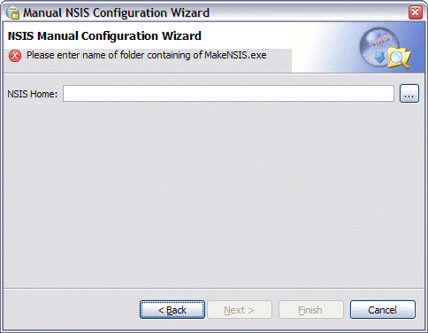

Configuration
Every time that EclipseNSIS is started, it verifies that it is configured with a valid NSIS installation.
If it is not correctly configured, it attempts to self-configure. It does this by reading the Windows registry to determine the
installation location of the NSIS software.
On the rare occasion that it cannot self-configure, the NSIS Configuration Wizard will be launched to configure EclipseNSIS with an NSIS installation.

Currently, the NSIS Configuration Wizard supports two configuration methods:
- Manual Configuration
- This invokes the Manual Configuration Wizard. This wizard is used to configure EclipseNSIS by manually specifying the location of the NSIS installation.

- NSIS Home
- Location of NSIS software installation. This is the folder where MakeNSIS.exe can be found.
- NSIS Update
- This invokes the NSIS Update Wizard. This wizard is used to configure EclipseNSIS by using NSIS Update to download and install NSIS software.
If the configuration is canceled or is unsuccessful, most of the EclipseNSIS functionality will be disabled. As long as EclipseNSIS is not configured, the NSIS Configuration Wizard can be accessed by using the EclipseNSIS→NSIS Configuration Wizard menuitem which is visible when the EclipseNSIS editor is open. Once configured, the NSIS Configuration Wizard will no longer be available. The behavior of EclipseNSIS can then be further customized using the Preferences
dialog.
Previous | Contents | Next
Copyright © 2004-2010 Sunil Kamath (IcemanK).